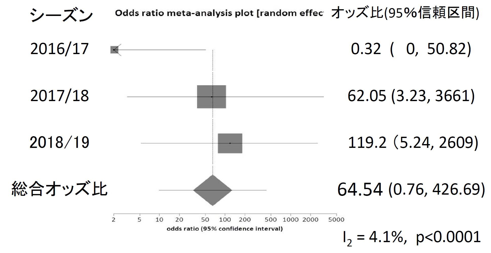
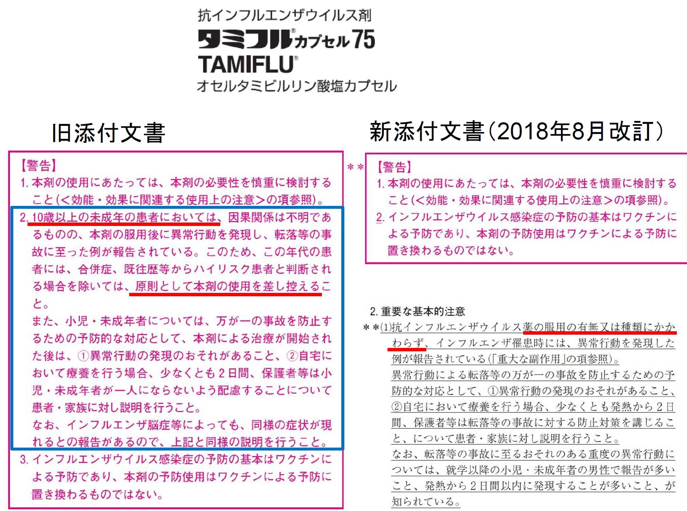
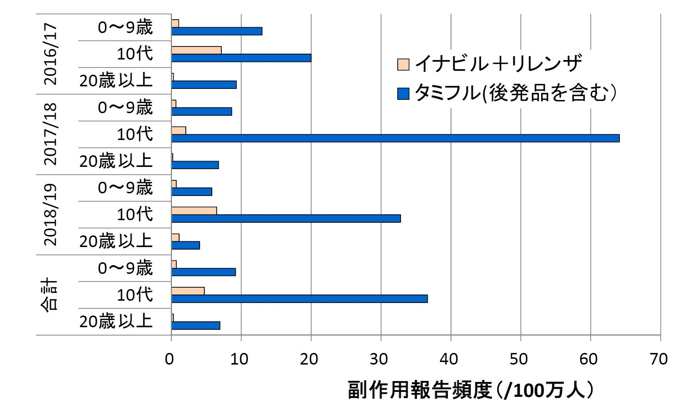
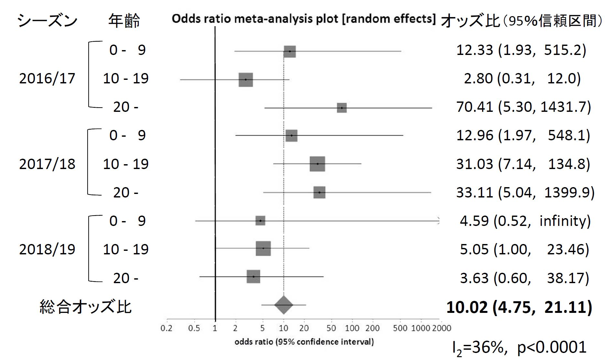

報道では、急に走り出す、飛び降りるなどの異常行動を起こした患者が42人、うちタミフルが19人と最も多く、昨年販売されたゾフルーザでは16人、リレンザ４人、イナビル３人とされているだけです。
しかし、その異常行動の内容を見ると、タミフルを服用した10代では４人が異常行動後に死亡していましたが、ゾフルーザを含めて他の抗インフルエンザウイルス剤を服用した10代の人の中で異常行動後に死亡した人はいません。そこで、服用した人数（分母）を調べて割合を比較しました。
死亡は、10代でタミフル（後発品のオセルタミビルを含む、以下同じ）を服用した12.2万人中４人でした（100万人あたり33人）。タミフル以外の抗インフルエンザウイルス剤を服用した10代の人は161.6万人いましたが、異常行動後に事故死した人はいません。
これは統計学的に検定すると、タミフルは他の薬剤に比較して約120倍10代で異常行動死を起こすことを意味します（図１、2018/19年）。また、そのように考えて間違う可能性は、1000億分の１に過ぎないという計算になりました。
１年分だけでは心もとないので、過去３年間のシーズンのデータを点検しました。タミフルは30万人が服用して６人（100万人あたり20人）、タミフル以外では、614万人が服用して３人（100万人あたり0.5人）でした。３年分をまとめて統計学的に検討すると、タミフルを服用すると10代の子は、他の薬剤より約40倍異常行動で死亡すると推定できました。そう考えて、間違う確率は１兆分の１以下ですので、まず間違いはありません。
さらに、３年分を年ごとに別々に集計し、それを総合した結果を図１に示します。この方法では、タミフルは他の抗インフルエンザウイルス剤に比較して、10代に使用すると、異常行動を起こして死亡する危険度が65倍という結果となりました。
図１：タミフルと10代異常行動死の危険度（タミフル以外の薬剤と比較して）
タミフルの10代原則禁止を解禁する動きが強まった2017/18のシーズンと、すでに 解禁なった2018/19年のシーズンで、10代の異常行動死が増加したことに注目。
ここで、注目してほしいのは、タミフルを10代に原則禁止としてきた使用規制の解除の動きとの関連です。
2016/17年のデータを用いて、使用禁止解除の動きが急速に活発化して来ました。例えば、日本小児科学会では、2017/18年のインフルエンザに備えた治療指針を発表して、「10代にはタミフルは原則として差し控える」と添付文書の警告内容をなぞりながらも、但し書き**）で、それを打ち消すように以下のように述べています。 **）ザナミビルあるいはラニナミビルの投与が困難と考えられる呼吸器疾患や乳アレル ギーのある10歳以上の小児には、異常行動などの有害事象について注意を行った上で 投与を考慮することが必要である。
この治療指針の但し書きでは、「投与を考慮する」と言っています。つまり「使ってよい」と言っているのと同じです。2018年の解禁を先取りした指針といえるでしょう。
そして、2018年７月に厚労省の医薬品安全対策調査会が開催されて「使用禁止解除」の決定がなされ、８月22日には、タミフルの添付文書の改訂が行われました。
具体的には、原則禁止の規定が削除されて、他の薬剤並みの注意書きに変更になりました（図2）。
図２：タミフルの新旧添付文書の比較：旧の「原則禁止」が新では削除
旧添付文書の「10歳以上の未成年の患者には・・・・原則として本剤の使用を差し控える」との警告が、新添付文書では削除された。
タミフル服用者の10代の異常行動死は2016/17年は報告されず（イナビルとリレンザでは各１人）、2017/18年は２人（イナビルで１人）、2018/19年は４人（他剤は０）でした。
統計学的には有意とは言えませんが、増えていると言えそうです。その原因は、「そのうち原則禁止は解除される」との動きがあったからか、あるいは実際に禁忌でなくなったことが影響して、医師が副作用を報告しやすくなったのではないでしょうか。
厚労省が2019年10月29日に公表したデータを点検して、異常行動の報告例を薬剤別に、10歳未満、10代、20歳以上、年齢不明の４段階で分けると、次のようになります。
タミフル（7、4、5、3)、リレンザ (0、4、0、0)、イナビル(0、1、2、0)、ラピアクタ（どの年齢も０）、ゾフルーザ(4、6、3、3)でした。
使用推定数はタミフル257万人、リレンザ53万人、イナビル241万人、ラピアクタは14万人、ゾフルーザ427万人でした。ゾフルーザ服用者の異常行動の報告数はタミフルと同程度ですので、これを別にして、吸入剤のイナビルとリレンザを組み合わせて、過去３年間を年齢別に集計して、総合的な危険度を計算しました。
図3は、抗インフルエンザウイルス剤の推定使用者100万人あたりの異常行動の報告数を、シーズン毎、年齢層毎に、吸入剤とタミフルで比較したものです。どのシーズンも、どの年齢層でも、タミフルが吸入剤よりも異常行動の報告割合が多いことは。一目瞭然です。
図3：異常行動の報告頻度（100万人当たり、タミフルと吸入剤との比較）
どのシーズンも、どの年齢層でも、タミフルが吸入剤よりも異常行動の報告が多い。
図4は、吸入剤と比較してタミフルを服用した場合に、どの程度報告されやすいのかを見たものです。■の位置が、最も確率の高い倍率を示しています。そして、その左右に伸びた線の左先端が95％信頼区間の下限で、この値になることは極めてまれであることを示しています（40分の１の確率）。そして、左先端が1.0を超えている場合には統計学的に有意と考えます。
図4：異常行動の報告頻度：吸入剤との比較したタミフルの倍率（危険度）
どの年のどの年齢層においても、タミフルは吸入剤（イナビルやリレンザなど）よりも 異常行動の報告が多く、全体で10倍多く報告された（過去3年間の集計結果）。
そのようにみると、３シーズンを３つの年齢層に分け、合計９件について検定したところ、タミフル群が吸入剤群に比較して単独で有意であったのが６件ありました。
そして、2016/17シーズンでは11倍、2017/18シーズンでは26倍、2018/19シーズンでも4.5倍と、いずれもタミフル服用で、吸入剤よりも有意に異常行動が多く報告されていました。
以上、どのような検討をしても、他の抗インフルエンザ剤よりもタミフル服用で異常行動が多く起こり、副作用報告が多くなったと考えられます。
2014年までに世界から米国食品医薬品庁（FDA）に報告されていた副作用報告を解析した結果では、異常行動後の死亡例はタミフルで30人、リレンザでは０でした。全報告に占める異常行動後の死亡の報告オッズ比は、41.39 (95%信頼区間: 2.53, 677.9, p<0.0001)という高い値を示していました。
今回、イナビルやゾフルーザも加えて解析した結果では、65倍でしたので、よく一致しています。タミフルは、10代の子に使うと異常行動死する危険性がやはり非常に大きいといえるでしょう。
したがって、タミフルは、どの年齢でも、異常行動を極端に起こしやすく、しかも、10代では、死亡につながる危険性が特に大きいと言えます。
日本では、インフルエンザに罹ると、たいていの人は受診します。検査を受け、タミフルなどノイラミニダーゼ阻害剤が処方されています。欧米ではどうでしょうか。
この点については、速報版No176（2017年11月）
鍵をかけるより、使い過ぎを止めよう
をご覧ください。